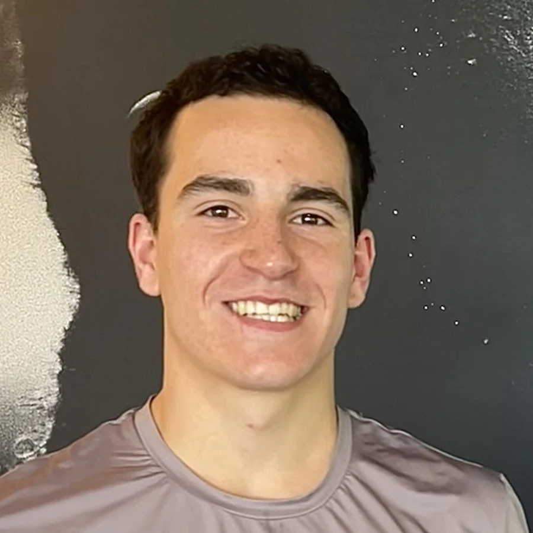

NEVESAtleta por natureza. Nutricionista por propósito.
Aprendi o trabalho onde ele acontece mesmo, dentro do futebol profissional. Estive na equipa principal do Leça FC e no RSC Anderlecht, as duas coisas antes de acabar o curso. A ciência só cria valor quando o atleta a usa mesmo.
75%
menos custo estimado em análises
Peguei num painel de sangue proposto e cortei-o aos marcadores que podiam mesmo mudar uma decisão de saúde ou de rendimento. O resto era informação bonita que não mudava nada.
1ª equipa
a nutrição do dia a dia, ainda estudante
Do matchday à hidratação e ao protocolo de suplementação. Incluindo preparar os isotónicos, as refeições pós-jogo e decidir o que se encomendava.
Plantel
avaliado por inteiro, protocolo ISAK
Oito pontos, e li a evolução de cada jogador ao longo do tempo em vez de os ordenar uns contra os outros. Um plantel não é um ranking, e o corpo de cada um tem o seu ponto de partida.
Cozinhas
um manual que hotéis conseguem executar
Escrevi de raiz o protocolo de hidratação e perdas de suor, uma calculadora de stock e um manual de catering para deslocações e jogos europeus, feito para uma cozinha de hotel assinar por baixo.
No Anderlecht passaram-me as questões técnicas do departamento, da vitamina D às revisões de suplementos, e esperava-se que eu voltasse com uma recomendação, não com um resumo.
Sou atleta desde que me lembro. É daí que isto começa.
Lá dentro percebi a coisa que mudou tudo para mim: a decisão tecnicamente correta nem sempre é a decisão praticamente certa. O plano perfeito que a cozinha não consegue executar não vale nada. A refeição certa que chega à hora errada não vale nada. E a mensagem certa, vinda de quem o atleta não confia, é um conselho para o lixo.
A ciência não chega ao atleta sozinha. Chega quando alguém constrói o sistema que a leva lá.
E antes de rendimento, um atleta é uma pessoa. Com escola, trabalho, família, sono a menos e a cabeça cheia. Um plano que ignora isso não se cumpre, e um plano que não se cumpre não vale nada.
Licenciado em Ciências da Nutrição, FCNAUP · ISAK Nível 1 · Erasmus em Itália e Bélgica · cédula pendente
Escolhe o teu lado e mostro só o que te serve, incluindo as ferramentas que já podes usar hoje.
Nutricionistas
As ferramentas e os sistemas que uso, para correres no teu contexto. Construo uma por semana e mostro o processo.
Atletas
Nutrição pensada à volta da tua época, não de um modelo. Trabalho individual abre assim que a cédula estiver resolvida.
Clubes e centros
Diagnóstico e sistemas de nutrição que a tua equipa técnica consegue correr sem mim na sala.
Construo uma por semana e mostro tudo, prompts incluídos. Sem spam e sem newsletter, só o trabalho.